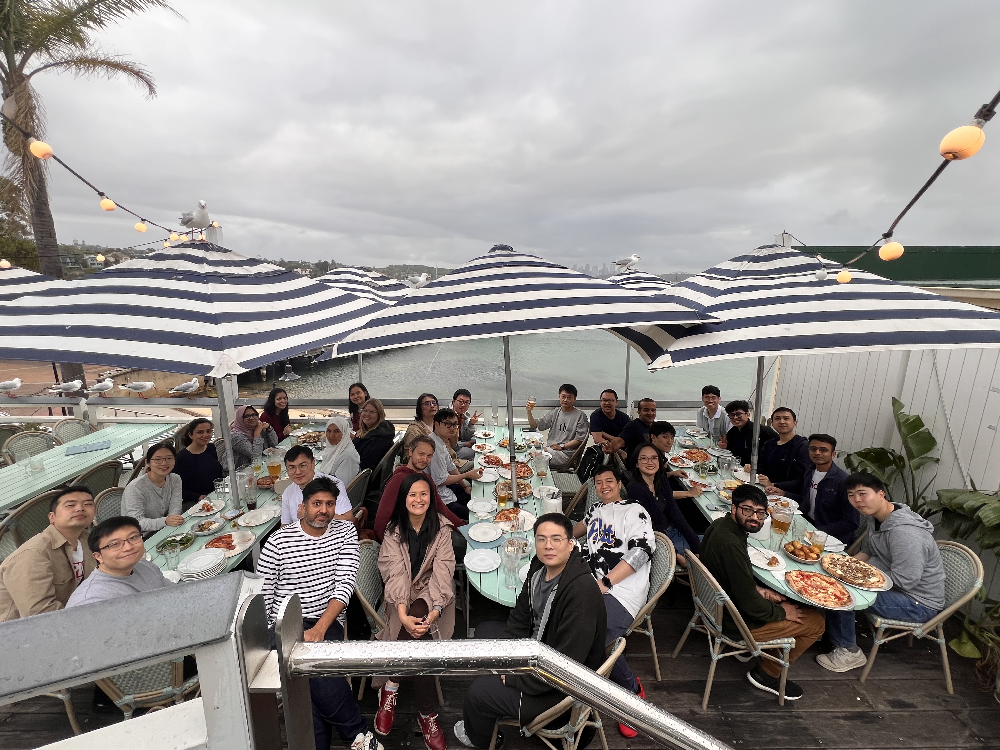

<div class='container'>
  <header class="masthead text-center">

    

    <p>
      <i>Collaborative Human-Centric AI Systems (CRUISE) Lab, led by <a href="https://fsalim.github.io/">Prof. Flora
          Salim</a>, works on machine learning for
        time-series, spatio-temporal data, and multimodal sensor data, and on trustworthy AI (including fairness,
        explainability, mechanistic interpretablity) for decision making systems. Our research is supported by the ARC,
        CRC, and many local and international industry and government partners.</i>

      <span style="display: block; margin-bottom: 3em"></span>

      <a href="https://github.com/cruiseresearchgroup" style="display: inline-block;">
        <i class="fa fa-github"></i> cruiseresearchgroup</a>&nbsp;&nbsp;&nbsp;
      <a href="https://huggingface.co/CRUISEResearchGroup" style="display: inline-block;">
        🤗 CRUISEResearchGroup
      </a>&nbsp;&nbsp;&nbsp;
      <a href="mailto:flora.salim@unsw.edu.au" style="display: inline-block;">
        <i class="fa fa-envelope-o"></i> flora.salim@unsw.edu.au
      </a>
    </p>

    <div class="w3-container"
      style="   background: #f0f8ff; padding: 25px; border-radius:10px; border: 1px solid #5d8aa8">
      <div style="text-align:left">
        <h3>News</h3>
        <span style="display: block; margin-bottom: 1em"></span>
        <div class="news">
          {% capture now %}{{'now' | date: '%s' | minus: 7776000 %}}{% endcapture %}
          <ul style="list-style-position:outside;padding:20px">
            {% for new in site.data.news %}
            {% capture date %}{{new.date | date: '%s' | plus: 0 %}}{% endcapture %}
            {% if date > now %}
            <li>
              <span>
                {{ new.date }} — {{ new.details }}
              </span>
            </li>
            {% endif %}
            {% endfor %}
          </ul>
        </div>
      </div>
    </div>

    <span style="display: block; margin-bottom: 3em"></span>

    <!-- <a class="twitter-timeline" href="https://twitter.com/KordingLab" data-widget-id="695051708246941697">Tweets by
      @KordingLab</a>
    <script>!function (d, s, id) { var js, fjs = d.getElementsByTagName(s)[0], p = /^http:/.test(d.location) ? 'http' : 'https'; if (!d.getElementById(id)) { js = d.createElement(s); js.id = id; js.src = p + "://platform.twitter.com/widgets.js"; fjs.parentNode.insertBefore(js, fjs); } }(document, "script", "twitter-wjs");</script> -->

    <span style="display: block; margin-bottom: 3em"></span>
    School of Computer Science and Engineering, UNSW, Sydney NSW 2052
    <span style="display: block; margin-bottom: 3em"></span>

  </header>
</div>